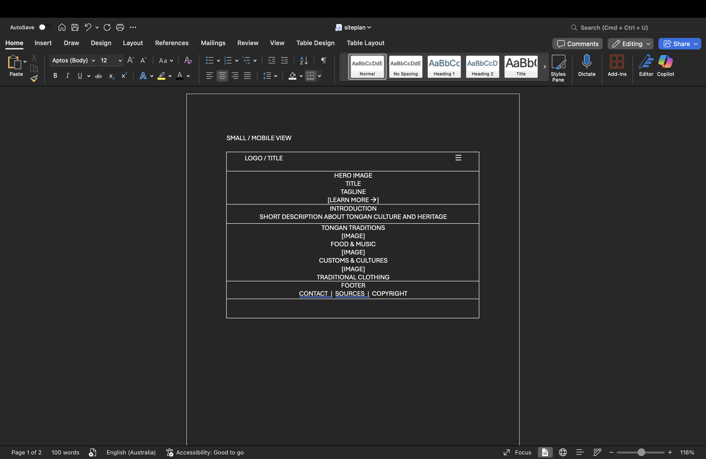
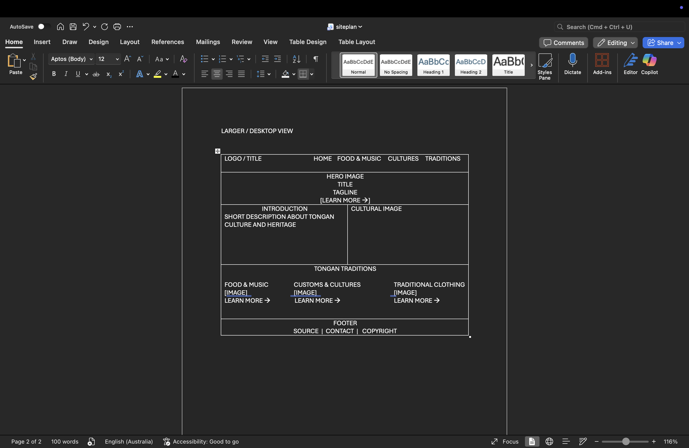

Tongan Heritage & Culture
This name was selected because the website focuses on sharing information about Tongan culture, traditions, history, and heritage. It is simple and makes the purpose of the website clear.
Site Purpose
The site will provide information about Tongan culture, traditions, and heritage. It will introduce visitors to traditional Tongan food, celebrations, music, dances, clothing, customs, and cultural values. The website will also use images and interactive features to help visitors learn more about Tonga and appreciate its culture.
Scenarios
- What are some traditional Tongan foods and when are they usually prepared?
- What are some important Tongan customs and cultural values?
- What type of clothing is traditionally worn during important Tongan celebrations?
Typography
Heading Font: Roboto
Body Font: Ariel
Accent Font: Roboto
Color Scheme
Primary Color: #C8102E
Secondary Color: #FFF
Background Color: #2f77d6
Text Color: #000
Font Family: Roboto
Wireframes

